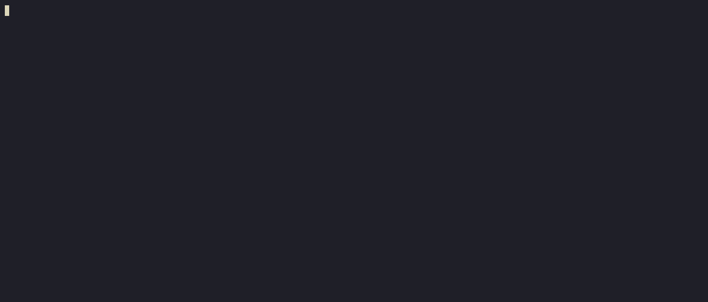
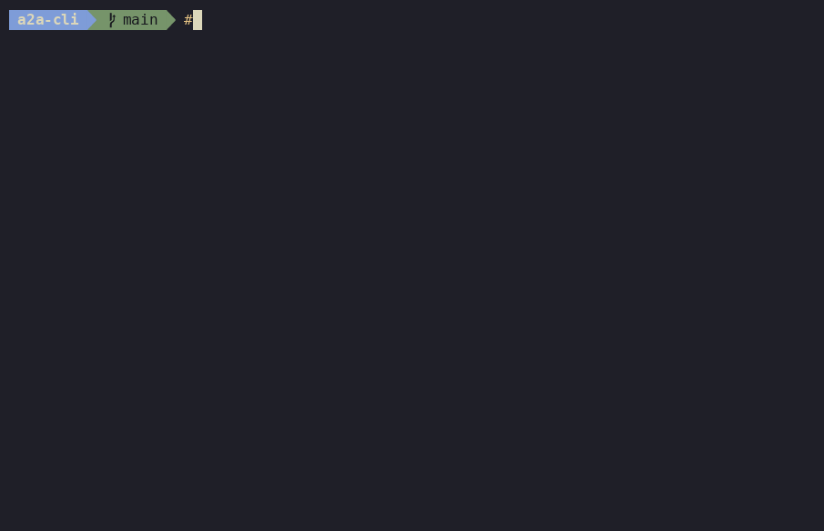

Meet the A2A CLI: discover, message, and manage agents from your terminal¶
A2A lets agents talk to each other. But what about everything that isn't an agent — your shell, a CI pipeline, a test, or a coding assistant that just needs to hand off one task? The A2A CLI (a2a) is the official command-line client: one standard command surface for every A2A agent.

The gap it fills¶
A2A is bidirectional: any A2A agent can act as a client to another and hand off a task. That works between agents — but most of the world isn't an agent. Take a shell script, a scheduled job, a build step, a test harness, or a person at a terminal. None of them can easily discover an agent's capabilities, send it a message, or follow a task to completion.
There's a second gap, too. As the ecosystem grew, community and SDK-provided CLIs appeared across languages. They drifted apart: different command names, flags, output shapes, transport handling. A script written for one didn't work with another.
The A2A CLI closes both gaps: a single, standardized way for anything that can run a command — you, a script, or any model or coding harness that calls tools — to reach an A2A agent. It's built on the CLI from the A2A Go SDK and speaks A2A Protocol v1.0.
Three ways to use it¶
- Empower AI coding assistants. Give your coding agent the
a2atool and it can offload work to specialized remote A2A agents — no bespoke integration code. - Interact instantly. Fetch an agent card, send a message, and stream real-time updates straight from the terminal.
- Automate workflows. Protocol-native JSON output and predictable exit codes make
a2aeasy to drop into pipelines — bridging non-A2A systems to A2A agents.
Install¶
Prefer a prebuilt binary? Grab an archive from the latest release, extract it, and put a2a on your PATH.
Once installed, three commands get you started:
# Discover an agent's card
a2a card get https://agent.example.com
# Send a message and wait for the result
a2a send -a https://agent.example.com "Hello, what can you do?"
# Stream events as they arrive
a2a send -a https://agent.example.com --stream "Summarize this document"
Hands-on: turn a plain script into an A2A agent, then drive it¶
Here's the part that makes the CLI click: you don't need an SDK or any A2A-specific code to get a server you can talk to. The CLI ships two built-in server modes for exactly that:
--echosends your message straight back — a "ping" for A2A, and the fastest way to confirm a connection.--execturns any program that reads stdin and writes stdout into a working A2A server. Any script becomes an agent.
Note
--echo and --exec are built for learning, demos, and testing — not for production.
Step 1 — warm up with the echo server¶
In terminal A, start the simplest server there is:
In terminal B, send it a message and get the same text back:
That's a full A2A round trip. Stop it with Ctrl-C and let's make it actually do something.
Step 2 — write a dummy agent (a plain Python script)¶
How --exec works: the CLI passes the incoming message on stdin and turns whatever the program prints on stdout into the response. Exit 0 succeeds; non-zero fails. stderr is logged and attached to the failure. That's the whole contract — any language that can read stdin and write stdout qualifies.
Save this as a2a_unaware_agent.py. It numbers each word on its own line, with a short delay — a stand-in for your agent's real work, and a preview of the streaming in Step 4 below:
#!/usr/bin/env python3
"""An A2A-unaware agent.
`a2a server --exec` pipes the incoming message to stdin and turns stdout
into the response. Exit 0 => completed, non-zero => failed. Use `python3 -u`
so stdout is unbuffered and chunks stream promptly.
"""
import sys
import time
def main() -> int:
message = sys.stdin.read().strip()
if not message:
print("error: empty message", file=sys.stderr)
return 1
# Stream one line per word so --chunk can split on newline.
for i, word in enumerate(message.split(), start=1):
print(f"{i}. {word}")
sys.stdout.flush()
time.sleep(0.3)
return 0
if __name__ == "__main__":
sys.exit(main())
Because --exec just pipes stdin to stdout, you can check the script works before involving the CLI at all:
Step 3 — serve it, then talk to it¶
In terminal A, wrap the script in a server. Without --chunk, --exec waits for the script to finish and returns everything it printed as one response:
In terminal B, discover it and send it work:
# Confirm the server is up by reading its card
a2a card get -a http://localhost:8080
# One-shot message and reply
a2a send -a http://localhost:8080 "hello world from A2A"
# -> 1. hello
# 2. world
# 3. from
# 4. A2A
You just stood up a discoverable A2A agent from an ordinary Python script.

Step 4 — stream the same reply, piece by piece¶
Long-running agents shouldn't make you wait for the whole answer. Serve the same script again, this time with --chunk set to a newline so each line is delivered as its own streamed piece (terminal A):
Then watch the pieces arrive live (terminal B):
Same script, same server mode, same CLI — only the --chunk flag changed, and the response is now streamed instead of buffered.
What else it does¶
The echo-and-exec tour is just the on-ramp. The a2a CLI also gives you:
- Agent-card discovery — read, save, and reuse an agent's capabilities.
- Rich messages and tasks — build multi-part messages, send synchronously or asynchronously, and follow a task through its full lifecycle.
- Streaming — consume updates as they're produced.
- Automation-friendly output — JSON output and predictable exit codes for pipelines and scripts.
- Cross-transport consistency — JSON-RPC, REST, and gRPC out of the box, plus custom transport plugins you can add without recompiling.
Give your coding agent the CLI¶
The CLI is a clean tool surface, so you can hand it to an AI coding assistant and let it delegate work to A2A agents on its own. The a2a-cli Agent Skill teaches harnesses like Claude Code, Cursor, and Codex to drive a2a from the command line:
The skill drives the a2a binary, so install the CLI first.
Start here¶
- Repository: github.com/a2aproject/a2a-cli
- Cookbook: a short, hands-on course that builds from your first server up to streaming, configuration, and the full task lifecycle — in the repo's
examples/. - New to A2A? Start with What is A2A? and the Python quickstart.
The A2A CLI is open source under the Apache License 2.0. Try it, script with it, and tell the team how you use it — issues and pull requests are welcome on the repo.